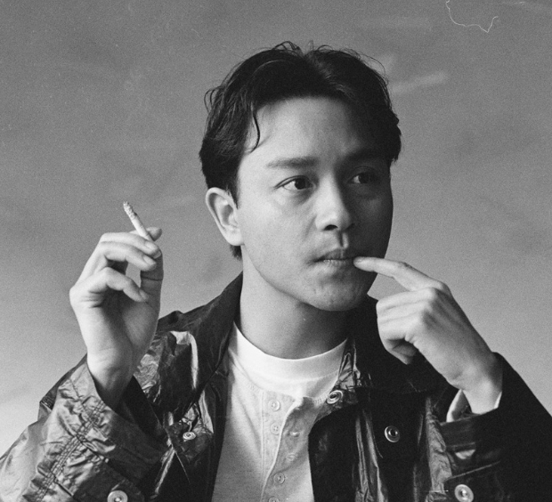

(중국어 정체자: 張國榮, 간체자: 张国荣, 병음: Zhāng Guóróng 장궈룽 광둥어 Zoeng Gwok wing 쩡궉윙, 영어: Leslie Cheung, 1956년 9월 12일 ~ 2003년 4월 1일) 은 홍콩의 배우이자 가수이다. 하카계 출신으로, 홍콩에서 출생하였으며 지난날 한때 중화 인민공화국 광둥성 메이저우 시에서 잠시 유아기를 보낸 적이 있다. 그는 중산층 집안의 10남매중 막내로 태어나, 영국 북부의 리즈 대학교에서 섬유직물관리학을 공부했으나 결국 졸업하진 못했다.
홍콩으로 귀국후 우연히 나간 노래콘테스트에서 AMERICAN PIE를 불러 2위로 입상하여 데뷔하였다. 1970년대에 홍콩 RTV (現 ATV/亞洲電視)에 가입, 《악어루 (鰐魚淚)》,《완화세검록 (浣花洗劍錄)》,《정인전 (情人箭)》등에 출연했지만 평가는 전무했다. 그러다가 《영웅본색》, 《패왕별희》 등으로 아시아 권을 비롯한 세계에 이름을 날렸다. 오우삼의 《영웅본색》에서 저우룬파(주윤발)과 함께 주연을 함으로써 이 영화의 인기와 함께 한국에도 이름을 알리기 시작했다.